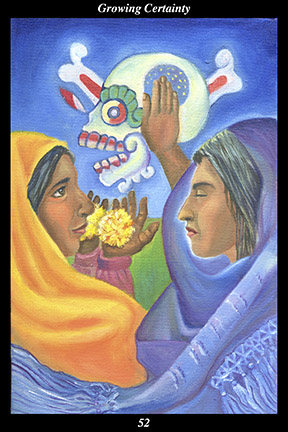

 | IMAGE Two female warriors confront death. One closes her eyes and holds up her hand in a gesture of rejection and denial. The other looks upon death like an old friend, holding out flowers in a gesture of both offering and accepting. |
INTERPRETATION
This hexagram depicts a blossoming of convictions. The two female warriors symbolize opposing views of what is real and true. The skeletal figure of death symbolizes the inevitability of change and transformation. The warrior who closes her eyes and rejects death symbolizes fear of the unknown. The warrior who holds out flowers and accepts death symbolizes trust in the world beyond the senses. The flowers she offers symbolize the perfection of the world as it is. Taken together, these symbols mean that your convictions continue to evolve in a time of burgeoning social, political, and religious movements.
ACTION
The feminine half of the spirit warrior does not step off the path of wisdom. Times of change bring with them the desire for permanent values and rules of behavior, creating conflicts between those who wish to institutionalize the new changes and those who wish to enforce the old. If we take our eyes off the perennial and become absorbed with the ephemeral, then we are caught in the sway of history’s pendulum as it swings between its predictable extremes of action and backlash, action and backlash—yet if we do not respond to the genuine need of others, then we lack both compassion and courage. Similarly, if we allow ourselves to be swept up in the passions of others’ convictions, then we face the predictable betrayal of values and purpose that every institution, cause, and movement commits—yet if we do not contribute to the world in a meaningful way, then we betray our own values and purpose. In this sense, the path of wisdom is that place where the path of compassion and the path of freedom intersect: neither governed by others’ ideas of right and wrong nor hiding behind a wall of selfishness and cynicism, we allow our understanding to evolve and grow while we consistently perform good works. It is a time for remaining secure in your belief that the truth continues to unfold as you continue to explore the great mystery that is life.
INTENT
Those who are convinced of their rightness commit many wrongs, those who seek revenge cause themselves great suffering: only by observing the long-range effects of self-righteousness can we stop perpetuating the cycle of action and backlash, action and backlash. True certainty revolves around the inevitable transformation of all things, the quintessential symbol of which is physical death. Because this inevitable confrontation with the unknown is shared by all living beings, it forms a bond of understanding and compassion that holds all life sacred—and, because recognizing our own fear of the unknown allows us to appreciate the suffering it causes in others, we have within our individual experience the foundation upon which to build our collective monument to the sacredness of all life. Because you accept the passing away of all ephemeral perfection with a loving and trusting heart, your contribution—your offering—to the undying perfection of the world is accepted by the spirit of metamorphosis. Cultivate inner courage and outer compassion and you transmute sterile certainty into an ever-unfolding blossom of loving wisdom.
SUMMARY
Commit yourself to acting on the truth wholeheartedly—but remember that your understanding and interpretation of the truth is evolving and unfolding as always. Avoid surrounding yourself with others who think like you, seek out different points of view. Do not allow your convictions to be set in mental stone—you want them to be living, growing, ever-ripening fruits of your heart.
THE LINE CHANGES
1° When people break out into the open and put dreariness behind them, they are understandably enthusiastic and, often, over-confident. It suddenly seems possible to accomplish anything and they reach for the moon. Everything is moving in a wonderful direction—as long as you go slow.
2° The window of opportunity opens—it seems like the shutters are taken down and golden sunlight fills the world after the dark storm passes. Don’t keep to yourself—let your joy overflow into the lives of your loved ones. Strengthen your bonds with those accompanying you to the end.
3° A big part of your life comes to an end—will you celebrate or grieve? Transitions are a natural part of life, the way endings are knotted back into new beginnings—the way the cycle of creation renews itself. Let go the past, be grateful for all you’ve learned, and lean forward into the oncoming wind.
4° When people are rude, insolent, and offensive it is because they do not believe there is any real consequence to their actions. Such persons cause disturbance everywhere they go—starting out bad, they just get worse. Let them go quickly and without a second thought.
5° When people who are fortunate complain and bemoan their lot in life, it is because they have lost touch with humanity and can no longer hear how they sound. Such persons will not help you—it is best to go your own way. They won’t accept your help, either—they have powerful friends above.
6° In order to protect what is valuable and sustain this period of peace as long as possible, it is necessary to confront an openly hostile faction. Disprove its accusations and prove its wrong-doings—isolate its leadership and win over its followers. Do not allow this problem to fester.